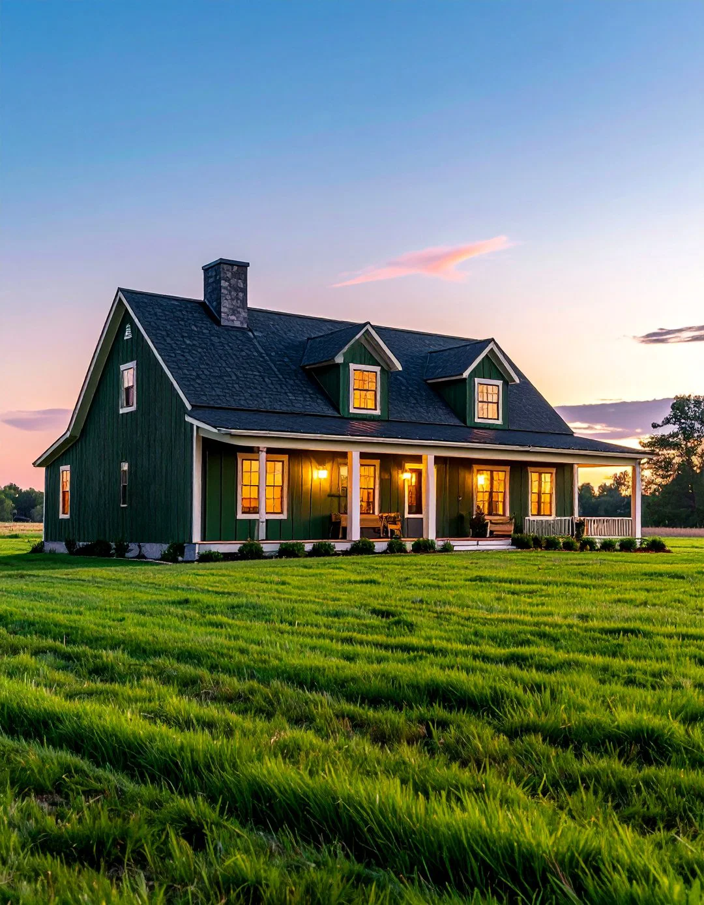

About EcoFresh

Our Corporate Vision
EcoFresh SuperStore was engineered to bridge the gap between regional organic micro-farmers and urban household consumers directly, eliminating middleman exploitation entirely.
Sustainability Standards
We guarantee 100% certified pesticide-free cultivation, implementing ethical fair-trade price frameworks to protect our farming ecosystems.